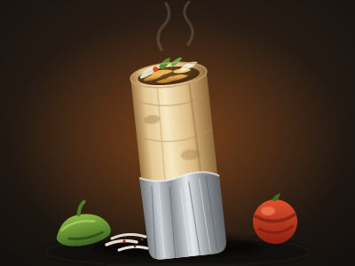
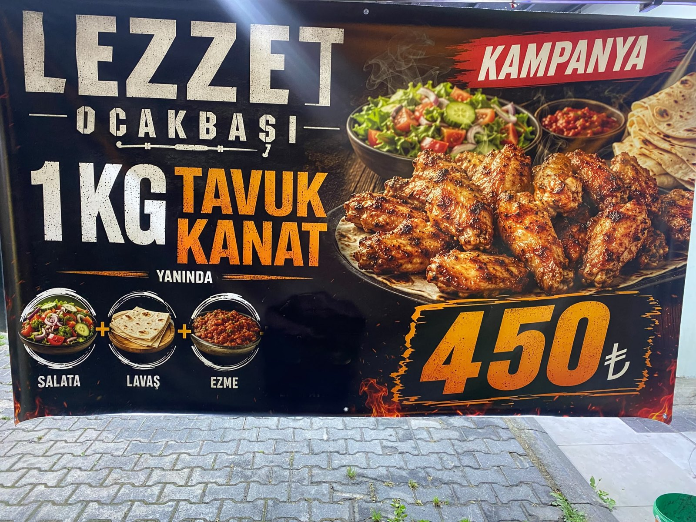

Talas · Kayseri
Odun ateşinde dönen döner, mangalda pişen kebap.
Talas'ın en samimi ocakbaşı sofrası.

Ocakta közlenmiş çıtır kanat — yanında hepsi dahil:
Sınırlı süreli kampanya · İçeride & paket serviste geçerli
Hakkımızda
Lezzet Ocakbaşı, Talas'ta yılların tecrübesiyle közün başında pişen gerçek Anadolu lezzetlerini sofranıza taşıyor. Taze etler, günlük hazırlanan döner ve odun ateşinin o eşsiz kokusu... Burada her tabak, ustanın elinden özenle çıkar.
Kalabalık aile sofraları, dostlarla uzun sohbetler ve sıcak bir ortam. Her gün akşam 22:00'ye kadar buradayız — canınız köz kebap çektiğinde kapımız açık.
"Köz başında geçen zaman, en güzel lezzettir."
Müşterilerimiz
★★★★★Dönerler közde pişiyor, farkı belli oluyor. Talas'ın en iyi ocakbaşılarından.
— Google Yorumu
★★★★★Akşam yemeğine gittik, sıcacık karşıladılar. Kebaplar çok lezzetliydi.
— Google Yorumu
★★★★☆Porsiyonlar doyurucu, fiyatlar uygun. Ailecek rahat oturulacak bir yer.
— Google Yorumu
* Yorumlar Google değerlendirmelerinden derlenmiştir.
Bize Ulaşın
Mevlana Mah., 38280 Talas / Kayseri
Plus Code: PH27+RW Talas
Her gün · 11:30 – 22:00